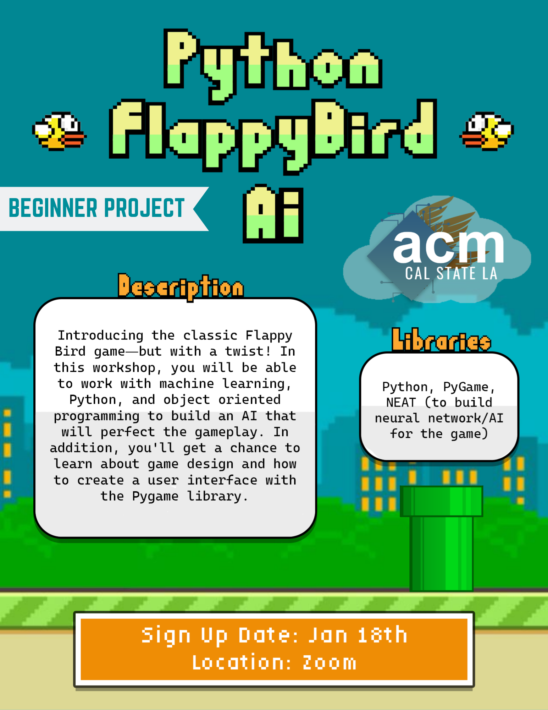

Hi! My name is Brian Pham, and not only that I am currently attending at California State University, Los Angeles (CSULA), but I am also a gamer that plays mostly PC games, like Valorant and sometimes a bit of Genshin Impact. I am usually a casual player, just playing games for fun, but sometimes I get a bit competitive in some cases :) I am also a kpop stan, but in the general term, I like kpop in particular, listening to music that is outside my usual "songs" that I listen to. I try to do new things that are outside my comfort zone, while making more social connections to have a better life.
Sometimes, in my own time, I like to make games that I try to implement in some of my CS classes that I attend to, including workshops that would help me improve my personal projects a bit better than before! Not only that, I like to work with others not only school related, but sometimes like to relax with them after a hard-working week with school and all. Here's a fun fact: during my high school days, there was a secret course that only the 1% of the class got to, and apparently I was one of the students that made into that class. The only requirement? Attending 10 Video Game Design classes in less than 3 years, in par with regular classes.